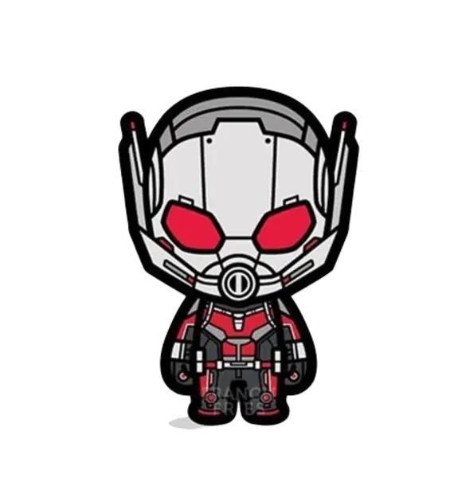
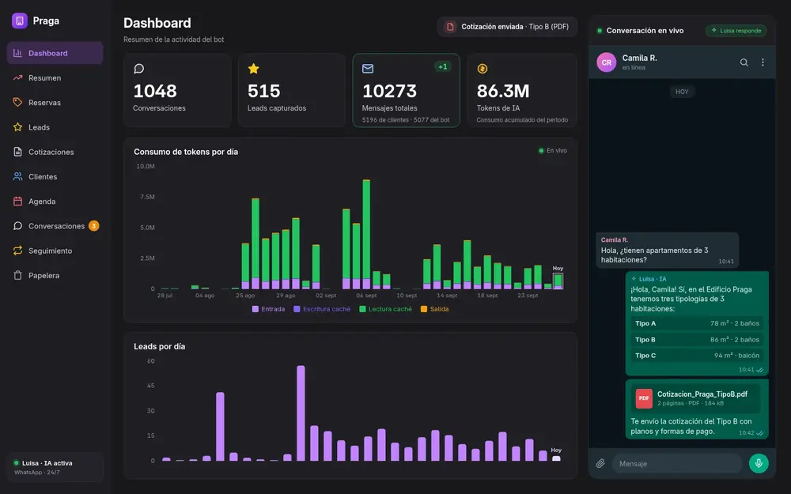
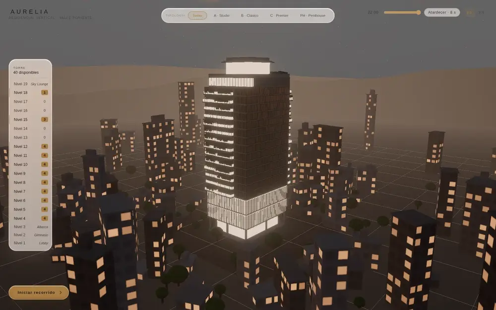
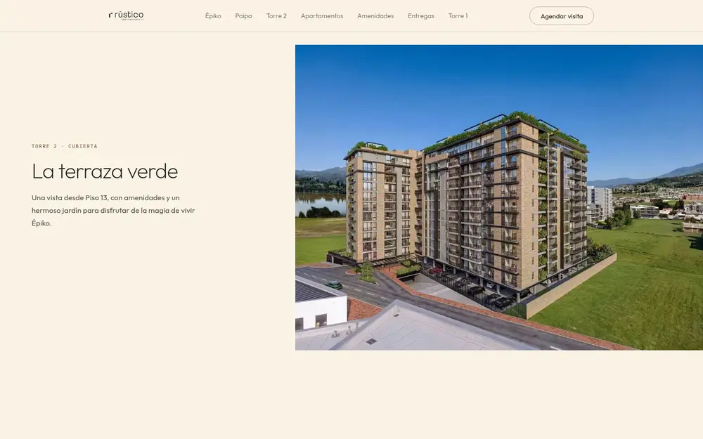
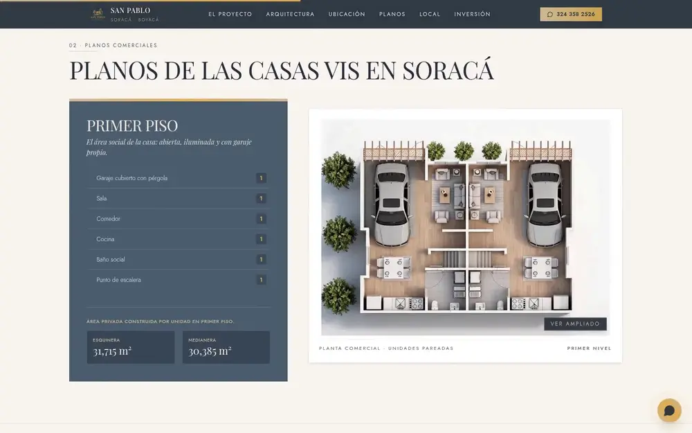
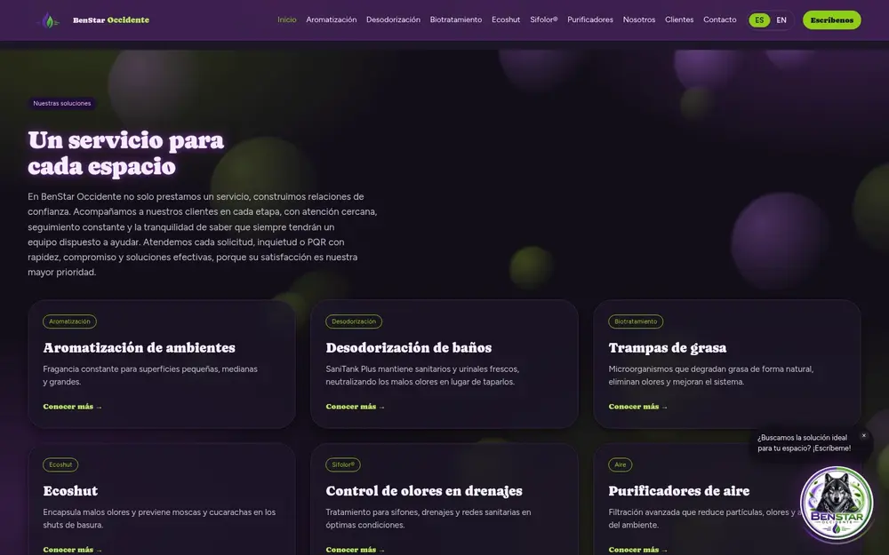
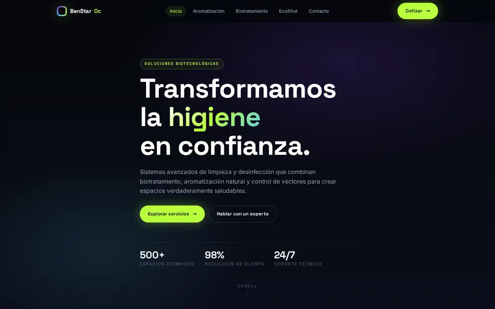
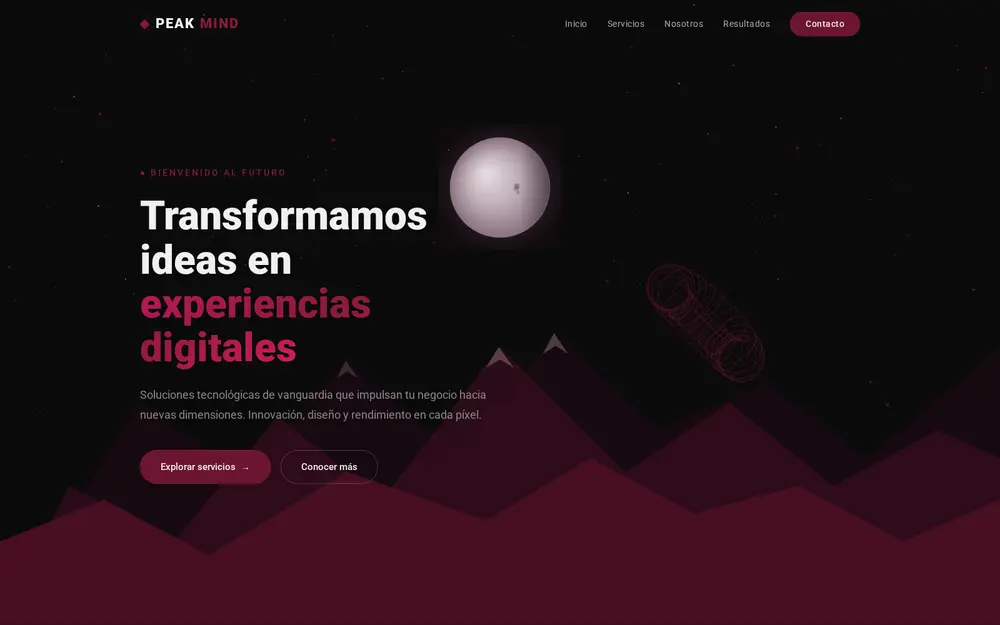

Interfaces que se sienten vivas
- React 19
- Next.js
- TypeScript
- Vite
- Tailwind CSS
- HTML / CSS / JS

Desarrollador web y de agentes de IA. Construyo experiencias desde lo microscópico hasta lo épico.
// ¿Por qué Ant-Man?
Ant-Man me enseñó que el tamaño no define el impacto. Una línea de código, un píxel, una idea diminuta pueden crecer hasta convertirse en algo gigante. Por eso esta web está inspirada en él: cada proyecto empieza en el Reino Cuántico y termina a escala real.
con ganas de aprender
persistente y en equipo
donde se cuida cada detalle
<que lo cambia todo />
donde nacen las ideas
Soy Diddier Santiago Contreras, desarrollador web y de agentes de IA. Convierto ideas pequeñas en productos que se sienten enormes.
Empecé en 2021 con HTML y CSS, mucha curiosidad y cero miedo a romper cosas. Hoy construyo sitios inmobiliarios con 3D y animación cinematográfica en React, Next.js y Three.js, y agentes de ventas por WhatsApp con Python, Node.js y Claude que cotizan, agendan visitas y alimentan un CRM completo.
Me obsesiona que cada animación, cada transición y cada píxel tenga una razón de ser, y que detrás haya ingeniería sólida: tests, rendimiento, accesibilidad y SEO.
Trabajo real para clientes reales: agentes de IA, webs inmobiliarias y 3D en el navegador.
Sigue haciendo scroll para recorrerlos →

01 Proyecto privado · clienteAsesora virtual de ventas por WhatsApp para el Edificio Praga. Con Claude y tool use busca unidades, envía cotizaciones en PDF con planos, agenda visitas en Google Calendar y pasa el chat a una asesora humana con tiempos de respuesta en horario hábil. Detrás hay un CRM completo con leads, embudo, abonos, cartera y reportes.

02 En líneaShowroom inmobiliario 3D en el navegador. Recorres la torre piso a piso, abres cada planta como maqueta y caminas por los interiores cambiando acabados en vivo. Toda la geometría se genera con Python dentro de Blender, con iluminación horneada de día, atardecer y noche.

03 En líneaLanding de la Torre 2 de ēpiKo by Rústico, en Paipa. La torre se construye mientras haces scroll: un vídeo convertido en fotogramas que se pintan en un canvas con ScrollTrigger. Tiene prerender para SEO y para los buscadores de IA, JSON-LD y pasa la auditoría de accesibilidad de axe sin errores.
Sitio del Edificio Praga, en Paipa, hecho sin frameworks ni proceso de build. Tiene un visor de planos para 11 tipologías que se usa con el teclado, dos recorridos 360° que cambian al instante, contadores, parallax y un aviso con sonido sintetizado con la Web Audio API.

05Landing de vivienda de interés social (VIS) en Soracá, Boyacá, que pasa el brochure comercial a la web. Usa el SEO nativo de Next.js (sitemap, manifest y JSON-LD con ofertas), cabeceras de seguridad, imágenes AVIF/WebP, visor de planos y animaciones con GSAP y Lenis.

06 En líneaSitio multipágina para una empresa de aromatización y biotratamiento de Tunja. Tiene 10 páginas en español e inglés con componentes compartidos, partículas de “aroma” con parallax, una mascota que abre WhatsApp según la página y un carrusel infinito de clientes.
Sitio bilingüe de una agencia de marketing para inmobiliarias. Tiene un showroom 3D procedural con la cámara guiada por el scroll, textos revelados línea a línea, tema claro y oscuro, y QA visual automatizado con Puppeteer. Lo construí coordinando varios agentes de IA, cada uno a cargo de su propia sección.
El siguiente experimento podría ser el tuyo. ¿Tienes una idea diminuta? Hagámosla gigante.
// 03.b — Laboratorio
Proyectos más pequeños donde pruebo ideas nuevas antes de llevarlas a escala real.
Agente de venta consultiva en Node.js con Claude: guarda los datos del lead, envía renders y planos por WhatsApp, agenda y cancela citas en Google Calendar y escala a un asesor humano. Incluye un panel de administración con exportación a CSV.
Tutor de programación en español para VS Code, construido con el Claude Agent SDK. Explica antes de mostrar código, usa un agente que solo puede leer el proyecto y sugiere autocompletado con una explicación. El arranque bajó de ~19 s a ~0.8 s.

Rediseño conceptual con una escena Three.js distinta en cada una de sus 5 páginas. Está reforzado para iOS Safari: un solo contexto WebGL en móvil, recuperación si se pierde el contexto y fondo de respaldo.

Landing con un fondo de partículas conectadas y un toroide 3D proyectado a mano en canvas, sin librerías, más parallax y animaciones de estadísticas.
Esta web: un viaje de escala inspirado en Ant-Man, con un campo de partículas WebGL y shaders GLSL escritos a mano, sin librerías 3D.
Mis primeras prácticas: un header con parallax de montañas, una pantalla de login y el sitio de DEM, una exportadora de lámparas de sal de Zipaquirá.
HTML y CSS a pulso: un header con parallax, una pantalla de login, el sitio de DEM y la primera versión de esta web inspirada en Ant-Man. Luego, Java y programación orientada a objetos para aprender a pensar.
Primero Sara, un bot de WhatsApp en Node.js con Claude para Épiko. Después Luisa, en Python y FastAPI: un agente con tool use y un CRM completo para el Edificio Praga, construido en 14 rondas y con 53 archivos de tests.
San Pablo, Edificio Praga, Épiko Torre 2 y BenStar. Después, AURELIA: un showroom 3D generado con Blender y Python que pasó de 24 a 83 fps. Y JPME, construido coordinando varios agentes de IA.
Una extensión de VS Code que enseña a programar con IA y esta web reconstruida desde cero con WebGL y shaders propios. Sigo creciendo, proyecto a proyecto.
// 05 — Contacto